15 The HIPV SoC
The HIPV SoC
15.1 Goal for this week
- Know the parts of the HIPV SoC and how they are connected
- Explain the memory-mapped I/O (MMIO) scheme and read the address map
- Follow an access of the processor to a device, from the
swinstruction to the slave that it reaches - Describe how the crossbar decodes addresses, arbitrates between the two masters, and routes the responses back
15.2 Introduction
15.2.1 A platform for learning
The SoC that we build in this chapter follows the spirit of the FPRO platform of Pong P. Chu, which the earlier generations of this course used. FPRO is simple, so that it is easy to use and understand. It is portable, because all its cores are developed from scratch and need no vendor IP. It is functional, which means that it can run real applications, although it is not as powerful as a commercial platform. And it is educational: it exists to be read and understood.
HIPV SoC keeps these four properties, and it changes the three things that matter most. The processor is not a MicroBlaze, but our own HIPV core from the previous chapters, so we can see and change every part of it. The bus is not the FPRO bus, but OBI, which we described in the previous chapter. And the interconnect is a crossbar, not a single shared bus, so that an instruction fetch and a data access to different devices can proceed in the same cycles.
15.2.2 The parts of the SoC
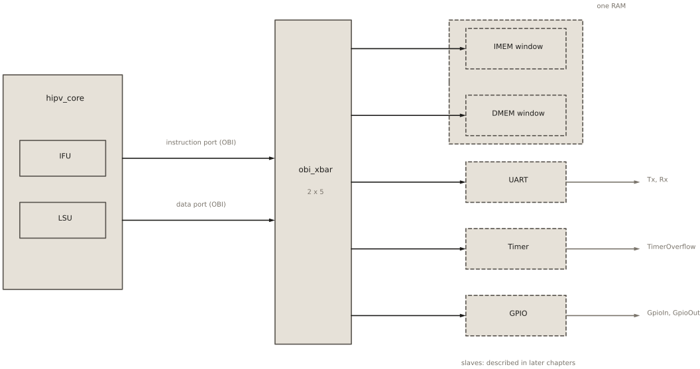
The SoC has four kinds of parts (Figure 15.1):
| Part | What it is |
|---|---|
| Processor | hipv_core, the RV32I core, with two OBI master ports: one for instructions, one for data |
| Interconnect | obi_xbar, the crossbar with the address decoder, the arbiter, and the routing of the responses |
| Memory | one RAM, which the interconnect shows to the processor through two windows, one for code and one for data |
| Peripherals | a UART, a timer, and a GPIO block |
The top level, hipv_soc, is purely structural, like hipv_core. It instantiates these parts and connects them by name. Seen from the outside, the SoC has a clock, a synchronous reset, and the pins of its peripherals: the serial Tx and Rx, the GpioIn and GpioOut pins, and the compare-match output TimerOverflow of the timer.
In this chapter we study the processor side and the interconnect. The memory and the peripherals are slaves of the interconnect, and each one gets its own chapter. Here we need them only as names and addresses.
15.3 Memory-mapped I/O
15.3.1 One address space
How does a program talk to a UART, or switch on a pin? RV32I has no special input and output instructions. It has only loads and stores, and the answer is the memory-mapped I/O (MMIO) scheme. The memories and the I/O devices are placed in the same address space. The processor reads a register of a device with a load, and writes it with a store, exactly as it accesses a word of memory. It does not know the difference. The interconnect looks at the address and decides which part of the system answers.
An I/O device is, from the programmer’s side, just a set of registers. Each register is mapped to its own address, and each one has a function, for example data to be sent, a configuration, or a status to be polled. Programming a device means reading and writing its registers.
This has a nice consequence for the design. The processor needs nothing special for I/O. The load/store unit that we built in the LSU chapter already does everything required. All the work of an MMIO scheme is in the interconnect.
15.3.2 The address map
The address map of the HIPV SoC assigns a region of the address space to each slave:
| Slave | Base | Size |
|---|---|---|
| IMEM window | 0x0000_0000 |
64 KiB |
| DMEM window | 0x1000_0000 |
64 KiB |
| UART | 0x2000_0000 |
4 KiB |
| Timer | 0x2000_1000 |
4 KiB |
| GPIO | 0x2000_2000 |
4 KiB |
The code starts at address 0, because the PC of the core is reset to 0x0000_0000. The memory is shown through two windows, IMEM and DMEM, which are two slaves of the crossbar but alias the same physical RAM. We describe this in the chapter on memory. For now, it is enough to know that a program places its data well above its code, because a store to the first word of the data window would also overwrite the first instruction.
The three peripherals sit together, each in its own 4 KiB region. The size of the region is far more than the few registers that a device has, and this is intentional. Regions of equal and generous size keep the decoding simple.
All regions follow one rule: the size is a power of two, and the base is aligned to the size. Then the region is exactly the set of addresses that share their upper bits. A decoder does not have to check “greater than the base and smaller than the end”, it only compares the upper bits. We see the code of this in a moment.
15.3.3 Accessing a device from software
In C, a register is a pointer to a fixed address. The BSP of the SoC defines the registers of the devices with a macro:
#define REG32(addr) (*(volatile uint32_t *)(addr))
#define GPIO_BASE 0x20002000u
#define GPIO_OUT REG32(GPIO_BASE + 0x00)
GPIO_OUT = 0xA5; // a store to 0x2000_2000The assignment compiles to a store, the same as for any variable:
lui x10, 0x20002 # x10 = 0x2000_2000
addi x5, x0, 0xA5
sw x5, 0(x10) # the interconnect sends it to the GPIOThe word volatile is essential. A normal variable can be kept in a register, and the compiler may remove a store whose value is never read back. A device register is different, because the store has an effect on the outside world, and the value that a load returns may change by itself. volatile tells the compiler that every access must really happen, and in the order of the program.
Let us follow the sw. In the Memory stage, the ALU result 0x2000_2000 is the address, and the LSU starts an OBI write transaction on the data port. It sets ObiDWe = 1 and ObiDBe = 1111, because sw writes a whole word, and it puts the data on ObiDWdata. Nothing in the request says that the target is a device. The interconnect takes the address, finds that it belongs to the GPIO region, and sends the request there.
The FPRO bus used a 22-bit address that was split in fields. Its MMIO space had 64 slots with 32 registers each, and the slot number was decoded from the address bits. A read or a write had to finish within one clock cycle.
In the HIPV SoC, the address is the full 32-bit address of the core. A slave owns a region, not a slot, and OBI lets it take as many cycles as it needs, because it answers with gnt and rvalid when it is ready. The price is a more capable interconnect, which is the subject of the rest of this chapter.
15.4 The processor
15.4.1 Two masters
The processor is the hipv_core module that we built in the previous chapters. For the SoC, what matters is its interface: a clock, a reset, and two OBI master ports. The instruction port belongs to the IFU. It only reads, and it fetches an instruction from the address of the PC. The data port belongs to the LSU. It reads for loads and writes for stores, and it uses the full request side of OBI with we, be and wdata.
The crossbar numbers its masters, and the numbers are constants of the SoC package: MASTER_D = 0 for the data port and MASTER_I = 1 for the instruction port. The order is not an accident. The lowest index has the highest priority in the default arbitration, so data accesses win over instruction fetches. We return to this in the section on arbitration.
The crossbar has the same ports for both masters, and the instruction master does not write. The top level therefore ties off the write side of the instruction port:
assign MWe[MASTER_I] = 1'b0; // fetch never writes
assign MBe[MASTER_I*4 +: 4] = 4'b1111;
assign MWdata[MASTER_I*32 +: 32] = 32'b0;The expression [MASTER_I*4 +: 4] is an indexed part select. It takes 4 bits that start at bit MASTER_I*4. The crossbar ports are flattened: master m occupies the bits [m*32 +: 32] of the address vector, bit m of the request, and so on. The reason is the coding standard of the project, which does not allow arrays of signals as module ports. Inside the crossbar, arrays are used freely.
Both masters keep at most one transaction outstanding. The IFU and the LSU each wait for rvalid before they issue a new request. This is a property of the processor, and it matters for the interconnect, as we will see when we route the responses.
15.4.2 What the processor does not have yet
HIPV is a simple core, and the SoC reflects it. There are no traps and no interrupts. The instructions ecall and ebreak and the CSR instructions are decoded as no-operations. The compare-match output of the timer, TimerOverflow, is brought to the boundary of the SoC as the future machine-timer interrupt, but nothing consumes it yet. There is also no bus error path. An access to an address outside every region does not stop the core, and the interconnect returns zeros, as we describe below. Each of these is a natural extension of the design.
15.5 The interconnect
15.5.1 Why a crossbar?
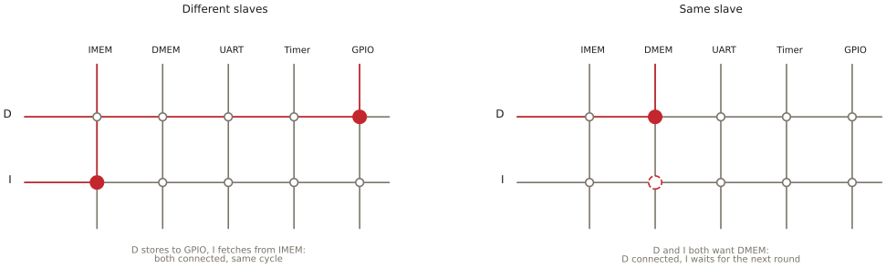
The core has two masters that work at the same time. The IFU fetches instructions continuously, and the LSU accesses data whenever a load or a store passes the Memory stage. On a shared bus, one of them would always have to wait while the other one uses the bus. A crossbar gives every master a path to every slave, so an instruction fetch and a load or a store to different slaves proceed in the same cycles. Only accesses to the same slave are serialized.
Figure 15.2 shows why the structure is called a crossbar. Draw a wire for each master as a row and a wire for each slave as a column. Every intersection holds a crosspoint, a switch that can connect that master to that slave. A shared bus would have a single wire for everybody, so only one crosspoint could be on at any time. In the crossbar, any set of crosspoints can be on at once, as long as no row and no column has two of them. A master can be connected to only one slave at a time, because it has one transaction outstanding, and a slave can serve only one master at a time, because it handles one access at a time. On the left of the figure, the data master is connected to the GPIO and the instruction master to the IMEM, and the two transfers run in parallel. On the right, both masters want the DMEM. They would need two crosspoints in the same column, so the arbiter connects one, and the other waits.
The crosspoints are not separate switches in the hardware. The matrix of the figure returns later as signals, in the section on selects, requests, and grants: the rows are SlaveSel[m], and the columns are SlaveReqM[s]. A crosspoint is on when the arbiter of its slave grants its master.
The price is hardware: each slave needs its own selection logic for its masters, and each master needs its own decoder. With two masters and five slaves, this is small. The crossbar is combinational logic. The path from the request of a master to the port of a slave, and the grant and the response on the way back, pass through the decoder, the arbiter and the multiplexers within the same clock cycle. The crossbar therefore adds no pipeline stage and no extra cycle to an access. Only a few registers hold its state: which slaves are busy, and which slave owes each master a response.
15.5.2 Structure
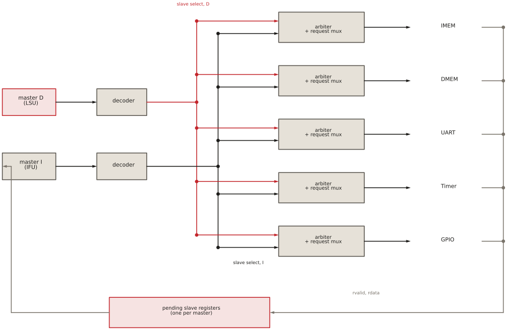
obi_xbar. Each master has a decoder, and its slave select is distributed to every slave. Each slave has an arbiter that picks one requesting master, and a multiplexer that passes the address phase of the winner. The pending slave registers route the responses back.
The crossbar, obi_xbar, has the two phases of OBI built into its structure (Figure 15.3).
In the address phase, each master has a decoder that turns the address into a one-hot slave select. For each slave, an arbiter collects the masters that want this slave, and picks one. A request multiplexer then passes the address, we, be and wdata of the winner to the slave port, and the grant goes back to the winner.
In the response phase, OBI has no transaction ID, so the crossbar must remember where the response will come from. Each master has a pair of pending slave registers that record which slave owes it an answer.
Besides these, there is an internal error responder for the addresses that belong to no slave.
15.5.3 Address decoding
The decoder obi_decoder is purely combinational, and there is one instance for each master. A region is a block of addresses that share their upper bits, so the decoder compares only the upper bits of the address with the same bits of the base:
localparam int unsigned MEM_LSB = 16; // memories are 64 KiB: compare Addr[31:16]
localparam int unsigned PERIPH_LSB = 12; // peripherals are 4 KiB: compare Addr[31:12]
always_comb begin
SlaveSel = '0;
SlaveSel[SLAVE_IMEM] = (Addr[31:MEM_LSB] == IMEM_BASE[31:MEM_LSB]);
SlaveSel[SLAVE_DMEM] = (Addr[31:MEM_LSB] == DMEM_BASE[31:MEM_LSB]);
SlaveSel[SLAVE_UART] = (Addr[31:PERIPH_LSB] == UART_BASE[31:PERIPH_LSB]);
SlaveSel[SLAVE_TIMER] = (Addr[31:PERIPH_LSB] == TIMER_BASE[31:PERIPH_LSB]);
SlaveSel[SLAVE_GPIO] = (Addr[31:PERIPH_LSB] == GPIO_BASE[31:PERIPH_LSB]);
end
assign DecErr = ~|SlaveSel;The two constants say how many address bits are not compared. A 64 KiB memory has 2^16 byte addresses, so its lowest 16 bits are the offset inside the region, and the decoder compares Addr[31:16]. A 4 KiB peripheral has a 12-bit offset, so the decoder compares Addr[31:12]. The name LSB is the index of the lowest bit that is compared. The offset bits are not decoded at all. The slave receives the full address and uses the offset to choose one of its own registers or words.
Take the address 0x2000_2008. Its bits 31:12 are 0x20002. For the GPIO, GPIO_BASE[31:12] is also 0x20002, so the select of the GPIO is 1. For the UART, UART_BASE[31:12] is 0x20000, which does not match, and the same holds for all the other slaves. Because the regions do not overlap, at most one select is 1, which is the one-hot property that the rest of the crossbar relies on. If the address matches no region, all selects are 0, and DecErr is 1.
This is why the regions must be power-of-two sized and aligned to their size. Only then is a region exactly the set of addresses with the same upper bits, and one equality comparator for each region is enough. A range check would need two comparisons, a greater-than and a less-than.
The widths in the decoder and the sizes in the package describe the same fact twice, and if somebody changes one and forgets the other, the decoder would silently select the wrong addresses. The decoder therefore checks them when the design is built:
if (IMEM_SIZE != 32'd1 << MEM_LSB || DMEM_SIZE != 32'd1 << MEM_LSB) begin : gen_check_mem
$error("memory region size does not match MEM_LSB");
endThis is a generate if, which we met in the chapter on SystemVerilog design. Its condition is made of constants, so the tool evaluates it during elaboration, and no hardware is created. If the condition is true, the tool stops with the message. A similar check covers the three peripherals and PERIPH_LSB.
The address map lives in one place, the package hipv_soc_pkg, together with the indices of the masters and slaves. The decoder and the crossbar take the number of slaves from there, so adding a slave to the package resizes them automatically. Adding a slave also needs one more line in the match block of the decoder.
15.5.4 Selects, requests, and grants
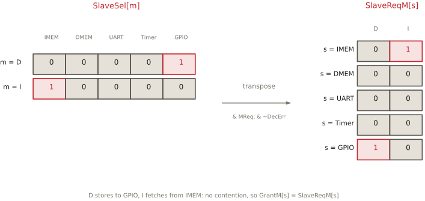
SlaveSel and SlaveReqM hold the same bits, seen from two sides. SlaveSel[m] has a row for each master, with one bit per slave. SlaveReqM[s] has a row for each slave, with one bit per master. Here the data master stores to the GPIO and the instruction master fetches from the IMEM.
Three arrays carry the address phase through the crossbar. They are declared as follows:
logic [NUM_SLAVES-1:0] SlaveSel[NUM_MASTERS]; // one-hot, per master
logic [NUM_MASTERS-1:0] SlaveReqM[NUM_SLAVES]; // requests per slave
logic [NUM_MASTERS-1:0] GrantM[NUM_SLAVES]; // one-hot grant per slaveEach declaration is an array of vectors. The part before the name is the vector, and the part after the name is the array. So SlaveSel[NUM_MASTERS] is an array with one element for each master, and each element is a vector of NUM_SLAVES bits. SlaveSel[m] is the whole vector of master m, and SlaveSel[m][s] is one bit of it. The indices are the constants of hipv_soc_pkg, such as MASTER_D = 0 and SLAVE_GPIO = 4. When we write a vector as a number, the bit 0 is on the right.
SlaveSel[m] says where master m wants to go. It is the output of the decoder of that master, one-hot, with one bit for each slave. If the address of master m is in the region of the GPIO, then only bit SLAVE_GPIO is set. If the address belongs to no region, no bit is set.
SlaveReqM[s] says who asks slave s. It is the same information seen from the other side, one bit for each master. Bit m is set when master m is really requesting, selects this slave, and has a mapped address:
SlaveReqM[s][m] = MReq[m] & SlaveSel[m][s] & ~DecErr[m];The array turns the per-master view into a per-slave view. The decoder works per master, because an address belongs to one master. The arbiter works per slave, because it chooses between the masters that want that slave. The transposition connects the two. The terms MReq and ~DecErr remove masters that are idle, because the address of an idle master may hold any old value, and masters with an unmapped address, which the error responder serves.
GrantM[s] says who wins slave s. It is the one-hot output of the arbiter of slave s, which takes SlaveReqM[s] as its request vector. Its bit m selects master m in the request multiplexer of slave s, and so the address, we, be and wdata of the winner reach the slave. If nobody asks the slave, GrantM[s] is all zeros. A grant is a decision of the arbiter and not yet a transaction. The request really goes out only when the slave is not busy: SReq[s] = |SlaveReqM[s] & ~SlaveBusy[s].
Three examples show the values. We write each vector with master 0 and slave 0 on the right.
Example 1: no contention. The data master stores to 0x2000_2000, and the instruction master fetches from 0x0000_0040. Both are valid requests.
| Signal | Value | Reading |
|---|---|---|
SlaveSel[MASTER_D] |
5'b10000 |
bit 4, the GPIO |
SlaveSel[MASTER_I] |
5'b00001 |
bit 0, the IMEM |
SlaveReqM[SLAVE_GPIO] |
2'b01 |
only the data master asks |
SlaveReqM[SLAVE_IMEM] |
2'b10 |
only the instruction master asks |
SlaveReqM of the other slaves |
2'b00 |
nobody asks |
GrantM[SLAVE_GPIO] |
2'b01 |
the data master wins |
GrantM[SLAVE_IMEM] |
2'b10 |
the instruction master wins |
This is Figure 15.4. Each slave has exactly one requester, so each arbiter has nothing to decide, and both transactions start in the same cycle. Figure 15.5 draws the same cycle as a crossbar, with the signals under the slave wires. Both crosspoints are filled, because the grants are 1 and the requests go out.
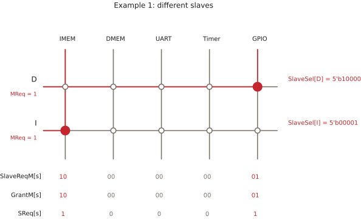
GrantM and SReq are 1). Dashed ring: the master requests the slave but is not connected.
Example 2: contention. Both masters access the DMEM, as in Figure 15.11. Both decoders produce the same select, and the requests of the slave have two bits set:
| Signal | Value | Reading |
|---|---|---|
SlaveSel[MASTER_D], SlaveSel[MASTER_I] |
5'b00010 |
both select bit 1, the DMEM |
SlaveReqM[SLAVE_DMEM] |
2'b11 |
both masters ask |
GrantM[SLAVE_DMEM] in cycle 1 |
2'b01 |
fixed priority: the lowest index, the data master |
GrantM[SLAVE_DMEM] in cycle 2 |
2'b10 |
the data master is done, only the instruction master asks |
In cycle 2 the grant already names the instruction master, but SReq of the DMEM is still 0, because the slave is busy with the first access. The grant becomes a transaction in cycle 3. This is the difference between a decision of the arbiter and a request that goes out.
Figure 15.6 and Figure 15.7 show the two cycles. In cycle 1 the instruction master has the dashed ring: it asks for the DMEM, and the arbiter has not chosen it. In cycle 2 the data master no longer requests, so its row has no crosspoint, although SlaveSel[MASTER_D] still holds the decoded old address. The mask MReq removes it from SlaveReqM. The instruction master now has the grant, but the ring stays dashed, because SReq is 0.
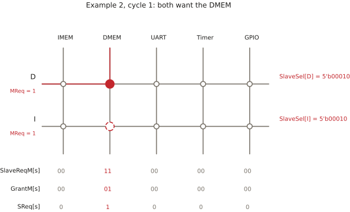
GrantM and SReq are 1). Dashed ring: the master requests the slave but is not connected.
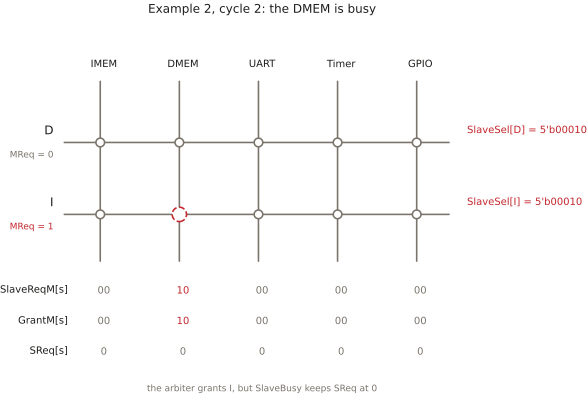
GrantM and SReq are 1). Dashed ring: the master requests the slave but is not connected.
Example 3: an unmapped address. The data master reads 0x8000_0000.
| Signal | Value | Reading |
|---|---|---|
SlaveSel[MASTER_D] |
5'b00000 |
no region matches |
DecErr[MASTER_D] |
1 |
the error responder takes over |
SlaveReqM of every slave |
2'b00 |
~DecErr removed the request |
No slave sees the request, and no arbiter grants anything.
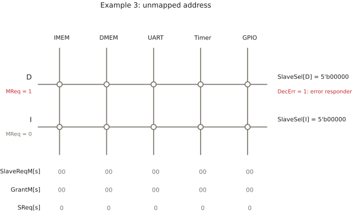
15.5.5 Arbitration
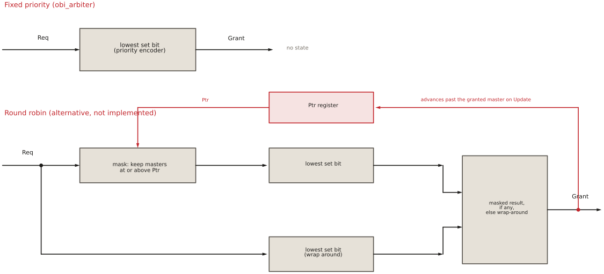
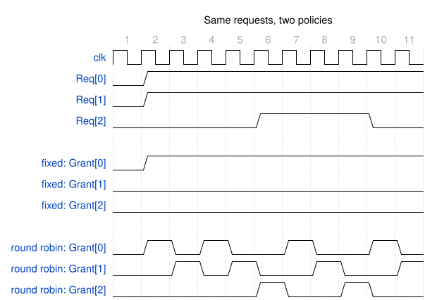
The decoders say what each master wants. If both masters want the same slave in the same cycle, somebody has to choose. For every slave, the request vector contains one bit per master, set when that master is requesting, targets this slave, and the address is mapped:
SlaveReqM[s][i] = MReq[i] & SlaveSel[i][s] & ~DecErr[i];An obi_arbiter takes this vector and returns a one-hot Grant. HIPV uses fixed priority: the requesting master with the lowest index always wins. The module has no clock and no state, only the number of masters as a parameter:
module obi_arbiter #(parameter NUM_MASTERS = 2) (
input logic [NUM_MASTERS-1:0] Req,
output logic [NUM_MASTERS-1:0] Grant);
// scan from the highest index down so the lowest set bit wins last
always_comb begin
Grant = '0;
for (int i = NUM_MASTERS - 1; i >= 0; i--)
if (Req[i]) begin
Grant = '0;
Grant[i] = 1'b1;
end
end
endmoduleThe block starts with the default Grant = '0, so an empty request vector gives an empty grant. Then the loop visits the masters from the highest index down to 0. Every time it finds a set bit Req[i], it first clears Grant, and then sets only bit i. The clearing matters, because an earlier iteration, for a higher index, may already have set another bit. The loop goes downwards on purpose. The visit of the lowest index comes last, so its assignment overwrites all the earlier ones, and the lowest set bit wins.
Three requests show the behavior, with three masters:
Req |
Visits | Result Grant |
Winner |
|---|---|---|---|
3'b000 |
no bit is set | 3'b000 |
nobody |
3'b110 |
i = 2 sets Grant = 100, i = 1 sets Grant = 010, i = 0 does nothing |
3'b010 |
master 1 |
3'b111 |
i = 2, i = 1 and i = 0 all assign, the last one stays |
3'b001 |
master 0 |
In the SoC, with two masters, 2'b11 gives 2'b01: the data master, which has index 0, wins over the instruction master. Because MASTER_D is index 0, the order of the indices in the package is the priority.
The loop does not run in time. The block describes combinational logic, and the synthesis tool unrolls the loop, since NUM_MASTERS is a constant. The result is a chain of multiplexers, in which a request of a lower index overrides the choice of all the higher ones. This is a priority encoder, written as a loop so that it works for any number of masters.
The price of fixed priority is starvation. If the master with the lowest index requests all the time, the others never get the slave. In Figure 15.10 master 0 and master 1 both request from cycle 2 on, and master 2 requests in cycles 6 to 9. Under fixed priority, master 0 is granted in every cycle, and masters 1 and 2 never get the slave. In this SoC it is not a practical problem, because the LSU issues at most one transaction per instruction, so the fetch always finds gaps.
The usual alternative is round robin, shown at the bottom of Figure 15.9 and in the lower rows of Figure 15.10. It is not part of the SoC, but it shows what fixed priority gives up. The round robin arbiter keeps a pointer Ptr to the master that has priority in this round. It first masks out the masters below the pointer and finds the lowest set bit of what is left. If no master at or above the pointer is requesting, it wraps around and takes the lowest set bit of the whole request vector. When a grant is really taken, the pointer moves past the master that was served. In the figure the grants alternate between masters 0 and 1, master 2 is served as soon as it asks in cycle 6, and when it stops requesting, the arbiter goes back to masters 0 and 1. The price is a register for the pointer and an update signal for each slave. Other policies exist as well, such as weighted round robin, where a master gets several turns per round, or time-division schemes with fixed slots. Each of them replaces only the logic that chooses the winner, and the rest of the crossbar stays as it is. The figure shows the arbiter alone, with a slave that accepts one request per cycle. In the SoC, SlaveBusy also spaces the grants out in time, but the order of the grants is the same.
The request of the slave is the OR of the requests of the masters, with one more condition:
assign SReq[s] = |SlaveReqM[s] & ~SlaveBusy[s];SlaveBusy[s] is a register that the crossbar sets when a request is granted and clears when the slave answers. While it is set, the crossbar does not present a second request to the slave. The slaves of this SoC handle one access at a time, and this is why two masters that access the same slave are serialized.
15.5.6 Routing the responses
OBI separates the address phase from the response phase, and the response carries no ID. When a slave raises rvalid, the crossbar has to know which master the response belongs to. So at the moment of the grant, it records the answer in two registers per master:
PendValid[m]says that mastermwaits for a response.PendSlave[m]says which slave owes it.
The response is then routed by these two registers:
assign MRvalid[m] = (PendValid[m] & SRvalid[PendSlave[m]]) | ErrPend[m];
assign MRdata[m*32 +: 32] = ErrPend[m] ? 32'b0
: SRdata[PendSlave[m]*32 +: 32];The expression SRvalid[PendSlave[m]] selects the valid signal of the slave that master m is waiting for, and SRdata[PendSlave[m]*32 +: 32] selects the data of the same slave. This is the read data multiplexer from the general bus structure of the previous chapter, controlled not by the current address, but by a register that was loaded when the request was granted. It has to work this way, because the address has long since changed when the response arrives.
This scheme is correct only because each master has at most one transaction outstanding. It is the main structural assumption of the interconnect. If we added a prefetch buffer with several fetches in flight, PendSlave would have to become a FIFO for each master, and responses from different slaves would have to be put back in order. That is a design step, not a small change.
15.5.7 Two masters, one slave
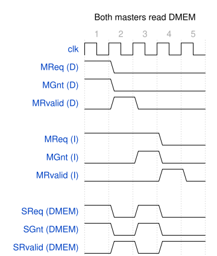
Figure 15.11 puts the three mechanisms together. Both masters read the DMEM slave, and every slave in this trace answers in one cycle.
- Cycle 1. Both masters request, and both decoders select the DMEM. The arbiter picks the data master, because of its higher priority. Its request goes to the slave, which grants it. The instruction master keeps waiting with
MReqhigh and no grant. - Cycle 2. The slave answers with
SRvalid. The pending slave register of the data master says that the DMEM owes it a response, soMRvalidof the data master rises. MeanwhileSlaveBusyis set, which blocks the request of the instruction master. - Cycle 3. The slave has answered,
SlaveBusyis clear, and the arbiter grants the instruction master. - Cycle 4. The slave answers the second access, and the response goes to the instruction master.
Two accesses to the same slave took four cycles, two for each. If the masters had targeted different slaves, both transactions would have started in cycle 1 and both would have been answered in cycle 2, which is the concurrency that we wanted from the crossbar.
15.5.8 Unmapped addresses
What happens when a program accesses an address that belongs to no slave? A bus that waits for a slave that does not exist would hang, and a hung simulation is much harder to diagnose than a wrong value. The crossbar therefore has an internal error responder. When DecErr is 1 for a requesting master, the crossbar grants the request immediately, without involving any slave, and one cycle later it delivers rvalid with zero read data. The master cannot tell this from a real grant and a real response, only the value is zero. The bus never hangs, and a stray load returns zero.
OBI has an err signal for this purpose, and a natural extension is to route it to the core and to turn it into a load/store fault. As we said above, the processor has no traps yet, so for now the zero is all that the program sees.
15.6 Summary
The HIPV SoC joins the HIPV core with a crossbar, one RAM and three peripherals. It follows the idea of the FPRO platform, a small and readable SoC, but with our own processor and the OBI protocol.
The SoC uses memory-mapped I/O. Memories and devices share one address space, a device is a set of registers, and the program reaches them with ordinary loads and stores. The processor needs no special support, and all the work is done by the interconnect, which decides from the address who answers.
The processor has two OBI masters, the LSU on the data port and the IFU on the instruction port. The crossbar connects them to five slaves. A decoder for each master matches the upper bits of the address against the regions of the address map. An arbiter for each slave chooses between the masters that want it. Pending slave registers remember where each response must go, because OBI responses carry no ID, and an error responder answers the addresses that belong to no slave, so the bus cannot hang.
In the next chapters we describe the slaves behind the crossbar, starting with the memory.